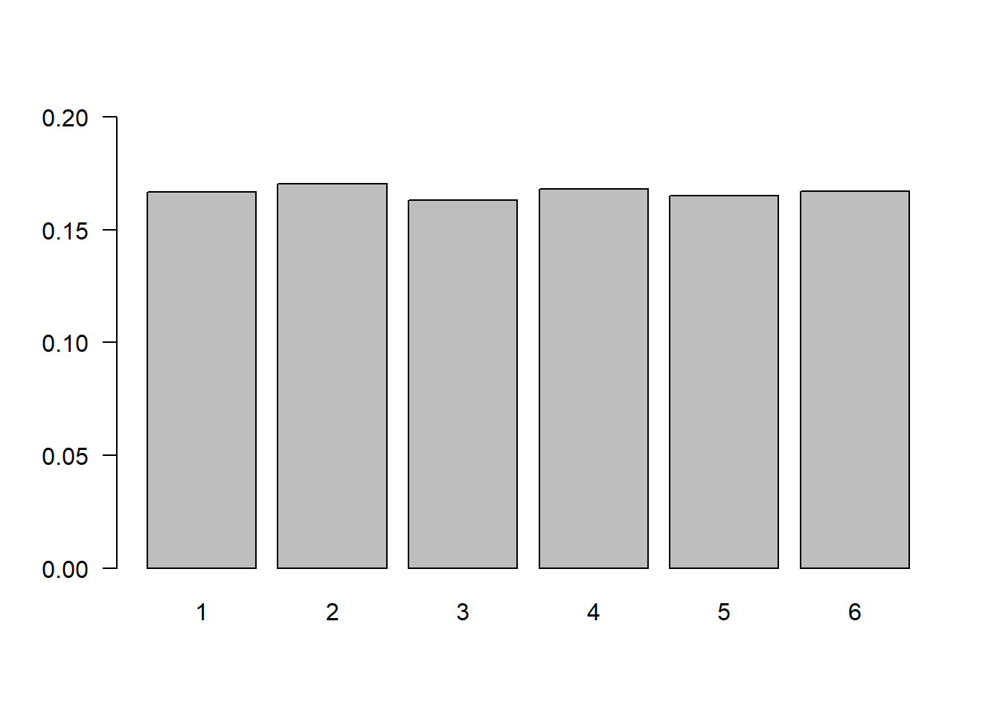
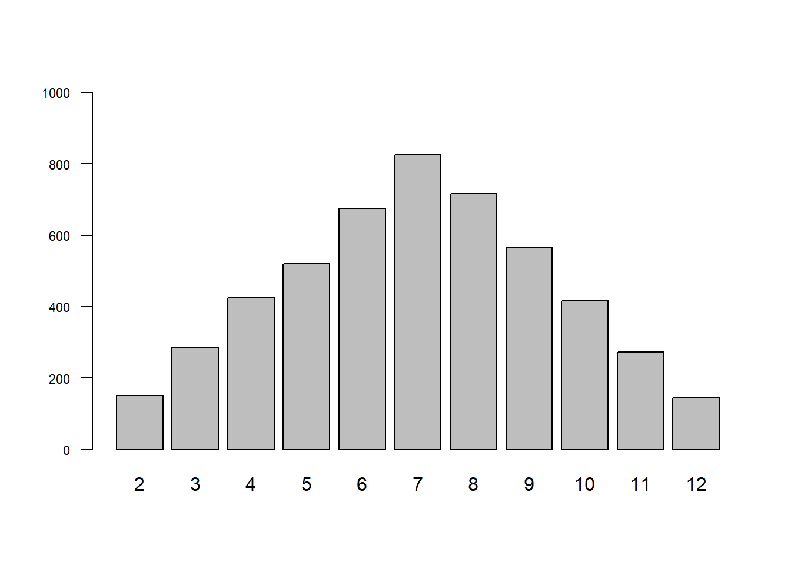
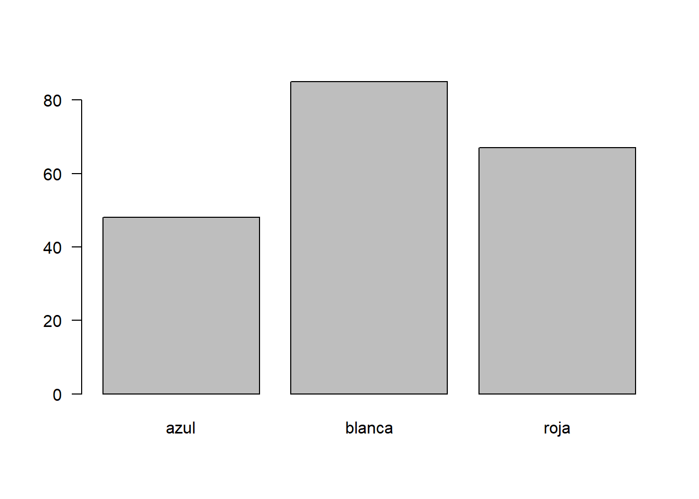

A continuación se presentan una serie de códigos relacionados el calculo de probabilidades
Para simular el lanzamiento de un dado utilizaremos la función
sample(x, size, replace = FALSE, prob = NULL), con
parámetros: x : valores del espacio muestral;
size : tamaño de la muestra y replace : para
determinar si la selección se realiza con remplazo o sin remplazo.
sample(1:6,2000, replace = TRUE), da un resultado una
muestra de 2000 valores enteros entre 1 y 6, con repetición.
n=20000 # Tamaño de la muestra
x=sample(1:6,n, replace = TRUE) # Extracción de la muestra
td1=prop.table(table(x)) # Tabla de los resultados
barplot(td1, las=1, ylim = c(0,0.2)) # Gráfico de los resultados
n=5000 # Tamaño de muestra
d1=sample(1:6,n, replace = TRUE) # Muestra dado 1
d2=sample(1:6,n, replace = TRUE) # Muestra dado 2
dados=data.frame(d1,d2) # Creación de data.frame
suma=apply(dados, 1, sum) # Obtención de la suma de los dos datos
barplot(table(suma), las=1,cex.axis=0.7, ylim = c(0,1000)) # gráfico de la suma
Para simular la extracción de bolas de una urna, se utilizan las
funciones sample() y rep() mostradas en el
siguiente ejemplo :
u=sample(c("azul","blanca","roja"), # Vector con elementos
size=200, # Tamaño de la muestra
rep=TRUE, # Con repeticion
prob=c(3,5,4)) # Número de bolas por color
barplot(table(u), las=1)
Las tablas de contingencia o tablas cruzadas se basan en las tablas de frecuencia para dos variables cualitativas o cuantitativas con pocos valores. En ellas se representan probabilidades conjuntas, marginales y condicionales
x=c(20,60,100,30,140,50)
m=matrix(x,ncol=2)
rownames(m)=c("Adminitrativo","Operativo","Vendedor")
colnames(m)=c("Mujer","Hombre")
m Mujer Hombre
Adminitrativo 20 30
Operativo 60 140
Vendedor 100 50addmargins(m) Mujer Hombre Sum
Adminitrativo 20 30 50
Operativo 60 140 200
Vendedor 100 50 150
Sum 180 220 400prop.table(m) Mujer Hombre
Adminitrativo 0.05 0.075
Operativo 0.15 0.350
Vendedor 0.25 0.125Esta función también se utiliza para calcular las probabilidades condicionales por filas
prop.table(m,1) Mujer Hombre
Adminitrativo 0.4000000 0.6000000
Operativo 0.3000000 0.7000000
Vendedor 0.6666667 0.3333333o las probabilidades condicionales por columnas
prop.table(m,2) Mujer Hombre
Adminitrativo 0.1111111 0.1363636
Operativo 0.3333333 0.6363636
Vendedor 0.5555556 0.2272727